Projection of Points - Point's position will be given in data. We need to find out its projection on H.P. (Horizontal Plane) and on V.P. (Vertical Plane).
There are maximum four quadrant wise positions possible of point. As we all know about quadrant, there are 4 quadrants exist. See figure below.
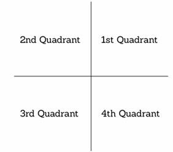
Here are four quadrant wise positions for any point.
Above H.P. and In Front of V.P. which shows point is in First Quadrant
Above H.P. and Behind V.P. which shows point is in Second Quadrant
Below H.P. and Behind V.P. which shows point is in Third Quadrant
Below H.P. and In Front of V.P. which shows point is in Fourth Quadrant
See figure below.
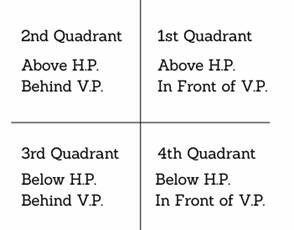
Let us check these quadrants in H.P. (Horizontal Plane) and on V.P. (Vertical Plane) view. See figure below.
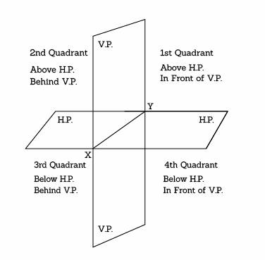
To find solution of problems based on projections we need to rotate H.P. (Horizontal Plane) in clockwise direction to 90°.
After this rotation of H.P. it will become parallel to V.P. See fig below.
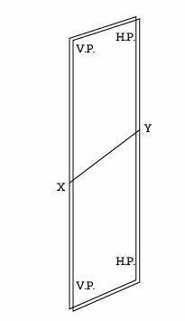
Solved Example:
Data: A Point "M" is 40 mm above H.P. and 40 mm in front of V.P. Draw its projections.
Solution: As point's position is above H.P. and In Front of V.P. it is in First Quadrant. See figure below.
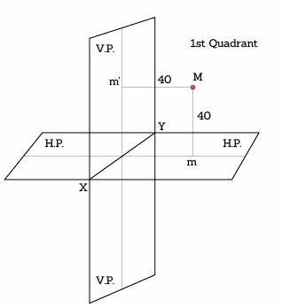
We will get m' projected on V.P. for front view which shows Elevation and m on H.P. for top view which shows Plan.
So, plan will be 40 mm in front of V.P. and Elevation will be 40 mm above H.P.
As per we discussed before for solution we need to rotate H.P. in clockwise direction up to 90°. See figure below.
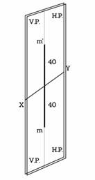
So the solution for the above data is:
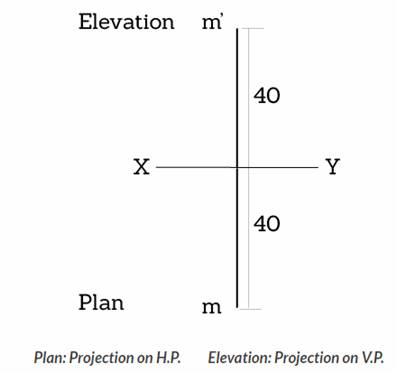
final-point-projection
In same way we can find projections for any point at any condition. Just remember to rotate H.P. at 90° while drawing solution.
Here are few important notes:
When point is in 1st quadrant, its plan will be below XY (reference line) and elevation will be above XY.
When point is in 2nd quadrant, its plan and elevation both will be above XY.
When point is in 3rd quadrant, its plan will be above XY and elevation will be below XY.
When point is in 4th quadrant, its plan and elevation both will be below XY.
Projections of lines
Straight line
A line is a geometric primitive that has length and direction, but no thickness. Straight line is the Locus of a point, which moves linearly. Straight line is also the shortest distance between any two given points.
The location of a line in projection quadrants is described by specifying the distances of its end points from the VP, HP and PP. A line may be:
- Parallel to both the planes.
- Parallel to one plane and perpendicular to the other.
- Parallel to one plane and inclined to the other.
- Inclined to both the planes.
Projection of a line
The projection of a line can be obtained by projecting its end points on planes of projections and then connecting the points of projections. The projected length and inclination of a line, can be different compared to its true length and inclination.
Case 1. Line parallel to a plane
When a line is parallel to a plane, the projection of the line on to that plane will be its true length. The projection of line AB lying parallel to the Vertical plane (VP) is shown in figure as a'b'.
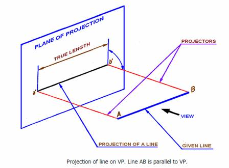
Case 2. Line inclined to a plane
When a line is parallel to one plane and inclined to the other, The projection of the line on the plane to which it is parallel will show its true length. The projected length on the plane to which it is inclined will always be shorter than the true length. In figure 2, the line AB is parallel to VP and is inclined to HP. The angle of inclination of AB with HP is being θ degrees. Projection of line AB on VP is a'b' and is the true length of AB. The projection of line AB on HP is indicated as line ab. Length ab is shorter than the true length AB of the line.
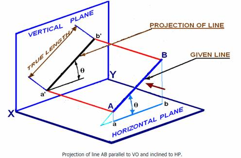
Case 3. Projection of a line parallel to both HP and VP
A line AB having length 80 mm is parallel to both HP and VP. The line is 70 mm above HP, 60 mm in front of VP. End B is 30 mm in front of right PP. To draw the projection of line AB, assume the line in the first quadrant. The projection points of AB on the vertical plane VP, horizontal plane HP and Right Profile plane PP is shown in figure 3(a). Since the line is parallel to both HP and VP, both the front view a'b' and the top view ab are in true lengths. Since the line is perpendicular to the right PP, the left side view of the line will be a point a''(b''). After projection on to the projection planes, the planes are rotated such that all the three projection planes lie in the same planes. The multi-view drawing of line AB is shown in Figure.
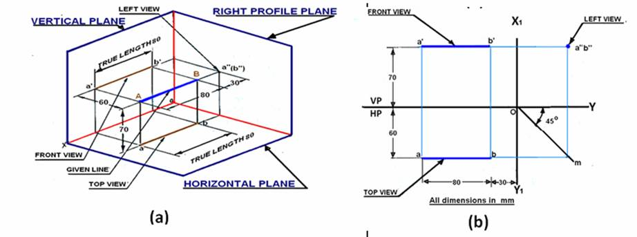
Case 4. Line perpendicular to HP & parallel to VP
A line AB of length 80 mm is parallel to VP and perpendicular to HP. The line is 80 mm in front of VP and 80 mm in front of right PP. The lower end of the line is 30 mm above HP. The projections of line AB shown in figure 4 can be obtained by the following method.
Draw a line XY which is the intersection between VP and HP. Draw the front view a'b' = 80 mm perpendicular to the XY line, with the lower end b' lying 30 mm above the XY line. Project the top view of the line which will be a point a(b) at a distance of 60 mm below XY line. Since the line is 70 mm in front of the right PP draw the X1Y1 line at a distance of 70 mm on the right- side of the front view.
Through O the point of intersection of XY and X1Y1, lines draw a 45° line. Draw the horizontal projector through a(b) to cut the 45 degree line at m. Draw the horizontal projectors through a' and b' to intersect the vertical projector drawn through m at a΄΄ and b΄΄. a΄΄b΄΄ is the left view of the line AB.
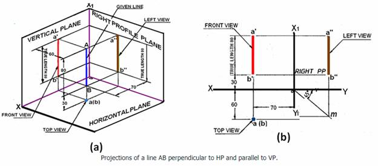
Line parallel to one plane and inclined to the other
Case 5. Line parallel to VP and inclined to HP
A line AB, 90 mm long is inclined at 30° to HP and parallel to VP. The line is 80 mm in front of VP. The lower end A is 30 mm above HP. The upper end B is 50 mm in front of the right PP. The projections of line AB shown in figure 5 can be obtained in the following manner. Mark a', the front view of the end A, 30 mm above HP. Draw the front view a΄b΄ = 90 mm inclined at 30° to XY line.
Project the top view ab parallel to XY line. The top view is 80 mm in front of VP. Draw the X1Y1 line at a distance of 50 mm from b'. Draw a 45° line through O. Draw the horizontal projector through the top view ab to cut the 45 ° line at m. Draw a vertical projector through m. Draw the horizontal projectors through a' and b' to intersect the vertical projector drawn through m at a'' and b''. Connect a΄΄ b΄΄ which is the left side view.
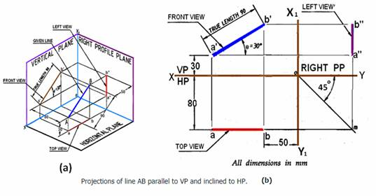